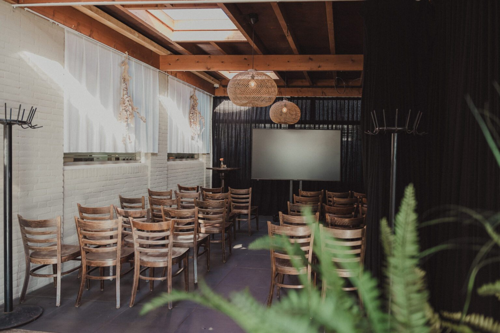
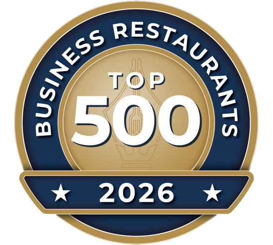
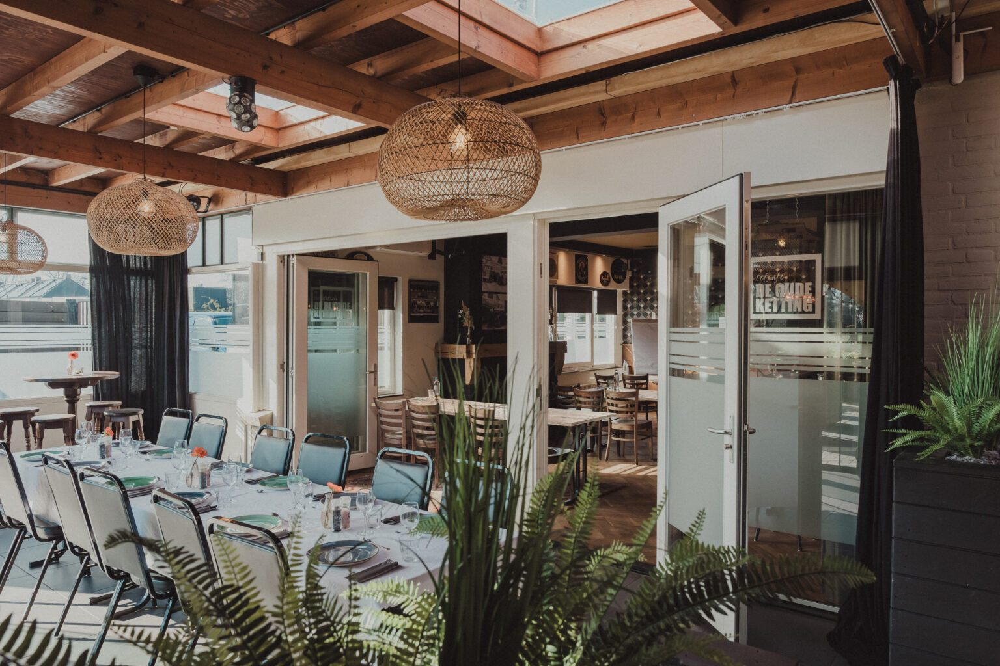

De Huiskamer
| Per uur (min. 2 uur) | € 45 |
|---|---|
| Dagdeel (4 uur) | € 165 |
| 2 dagdelen (8 uur) | € 315 |
| 3 dagdelen (12 uur) | € 450 |
Eetcafé in Boxtel, vlak naast de A2
Een stevige lunch, een gezellig diner of gewoon een kop koffie met iets lekkers. Met een knipoog naar ons verleden als routier.
Een fijne plek langs de A2 waar je terechtkunt voor een goede kop koffie, een lekkere lunch of een gezellige avond uit. Of je nu onderweg bent of speciaal voor ons komt: bij ons schuif je altijd aan in een ontspannen, huiselijke sfeer.
Sinds 2016 is De Oude Ketting in handen van de familie Van Dinther: William, Riekske en Meike. William staat in de keuken en maakt elke dag weer iets lekkers klaar. Riekske zorgt dat iedereen zich welkom voelt in de bediening. En Meike is de vliegende keep: van de bar tot de keuken en overal daartussen.
De zaal ademt een frisse, warme en authentieke sfeer, met de oude vrachtwagenfoto's aan de muur als knipoog naar onze tijd als truckerscafé. Alles wordt met liefde en vakmanschap bereid in onze eigen keuken.
Hopelijk zien we jullie snel bij ons!
Onze nieuwe herfst- en winterkaart: gastvrijheid en kwaliteit, en de oude favorieten hebben nog altijd een plek.
Voor 3 à 4 personen: charcuterie, kazen, Bourgondische bitterballen, karaage kip, groentedippers, brood en dipjes. De hele dag te bestellen.
27,50
Geniet tijdens de feestdagen thuis van een kant-en-klaar kerstmenu van ons. Mail je bestelling naar info@deoudeketting.nl en je krijgt een afhaaltijdslot op 24 december tussen 11:00 en 14:00 uur.
Bij het ophalen krijg je een bereidingswijze mee, zodat je het alleen nog maar hoeft op te warmen en mooi kunt uitserveren.
Bestel je kerstmenuCarpaccio met rucola, truffelmayonaise, pecorino, zongedroogde tomaat en garnering
of
Gerookte zalm met sla, rode ui, ei, mosterd-dillesaus en garnering
Tomatensoep, bospaddenstoelensoep of Franse uiensoep
Los erbij: breekbrood met dippers 7,50
Alle hoofdgerechten met groenten, aardappelgratin en salade.
Tiramisu, duo van chocolade of stoofperenparfait
Zoekt u een sfeervolle, kleinschalige ruimte voor een bijeenkomst, training, presentatie of feest? Onze Huiskamer met aansluitende Serre is een warme en multifunctionele plek waar professionaliteit en gastvrijheid samenkomen.
Begin de dag met een boswandeling op Landgoed Venrode, op een paar minuten lopen, of sluit uw bijeenkomst af met een borrel op ons overdekte terras onder de stretchtent. Lunch, borrelplank, buffet of diner stellen we op maat samen.

Officieel opgenomen in de Business Restaurants Top 500 van 2026: geselecteerd op kwaliteit, service en zakelijke mogelijkheden zoals bedrijfsfeest, private dining, groepslunch, vergaderen en walking dinner.

| Per uur (min. 2 uur) | € 45 |
|---|---|
| Dagdeel (4 uur) | € 165 |
| 2 dagdelen (8 uur) | € 315 |
| 3 dagdelen (12 uur) | € 450 |

| Per uur (min. 2 uur) | € 90 |
|---|---|
| Dagdeel (4 uur) | € 340 |
| 2 dagdelen (8 uur) | € 675 |
| 3 dagdelen (12 uur) | € 1.000 |
Alle prijzen zijn inclusief btw. Huiskamer en Serre samen huren kan tegen een combinatieprijs.
Overige dranken op nacalculatie. Lunch, borrel of diner op aanvraag.
| Flipover incl. papier en stiften | € 15 |
|---|---|
| Extra kan koffie | € 28,50 |
| Extra kan thee | € 12 |
| Extra scherm | € 30 |
Graag geen eigen consumpties meenemen zonder overleg.
Ook op zaterdag zijn feesten, borrels en partijen op aanvraag mogelijk.
Het Groene Woud en Kampina liggen om de hoek. Vier routes om op te stappen, en daarna is er koffie met gebak.
We verwelkomen elke dag vrachtwagenchauffeurs en passanten voor lunch, diner, borrels en feesten. Daar zoeken we handen bij.
Ben je 14 jaar of ouder, gemotiveerd, flexibel en een echte teamspeler? En kun je op maandag, woensdag en/of donderdag? Stuur een mailtje of neem contact op met Meike of Riekske.
Mail onsJe ondersteunt de chefs bij de voorbereiding en bereiding van de gerechten en houdt de keuken netjes. Deze vacature staat ook op Indeed.
Reageer per mail| Maandag | 10:00 - 22:00 |
|---|---|
| Dinsdag | 10:00 - 22:00 |
| Woensdag | 10:00 - 22:00 |
| Donderdag | 10:00 - 22:00 |
| Vrijdag | 10:00 - 20:00 |
| Zaterdag | Gesloten, behalve voor feesten, borrels en partijen |
| Zondag | 11:00 - 20:00 |
Lunch tot 16:00 uur, diner vanaf 16:00 uur. Borrelkaart de hele dag.
Bel ons of mail je reservering, dan zorgen wij voor een plek.
Boxtel Noord, 150 meter van de A2 ('s-Hertogenbosch - Eindhoven), naast Landgoed Venrode.